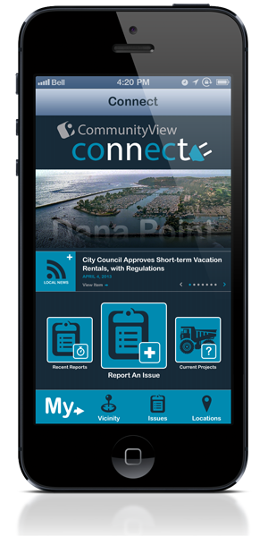
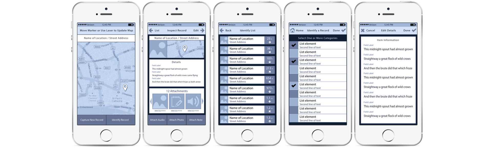

CommunityView is a web-based mapping application that enables local
governments to publish relevant municipal information to the web for
easy access by their residents.

Year
2013
Role
Design Lead
Team
Myself and a Lead Developer
The iOS Connect app was developed to provide city residents with
news and information. This allowed them to keep up with the latest
events and city meetings.
The application's primary workflow allowed residents to invest in
their community by reporting and tracking issues around their city.
Initial wireframes were created with Photoshop and prototyped using the
Marvel App.
Low-fidelity wireframes for "New Report" workflow

Low-fidelity wireframes for "View/Edit Reports" workflow
Final screens were created in Photoshop. Image assets and reference were
provided to a lead developer for assembly using XCode and PhoneGap.
Primary 'Issue Reporting' workflow
Access to additional city services - locations, contacts, projects,
events
What I Learned
This project was the company's first mobile application and everyone was
learning as they went. The product had been envisioned as separate app
per city with specific branding and features based on the city's needs.
As such, a level of customization was to be expected. However, I found
that building applications in pixels required a lot of time and
maintenance. The amount of assets generated for both prototyping and
production took away from time that could have been spent on design
iterations and testing.
As we'd chosen to build a web application rather than a native app, I
decided to leverage my experience designing for the browser and move to
a coded UI on future projects.